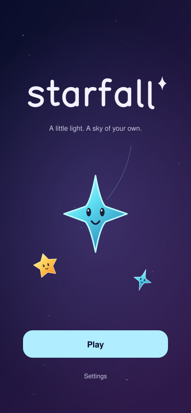
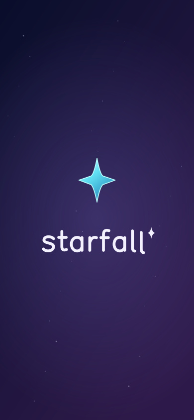
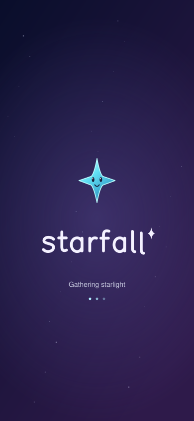

Cover / A welcoming sky
The character earns the spotlight. One clear Play action; settings stay secondary. Tagline is exploration copy.

Launch / Quiet continuity
Static mark and silhouette only. Match the real first frame; no spinner, CTA, or manufactured delay.

Loading / Only when needed
A proposed real-work state, not an extra screen to add by default. No fake progress percentage.